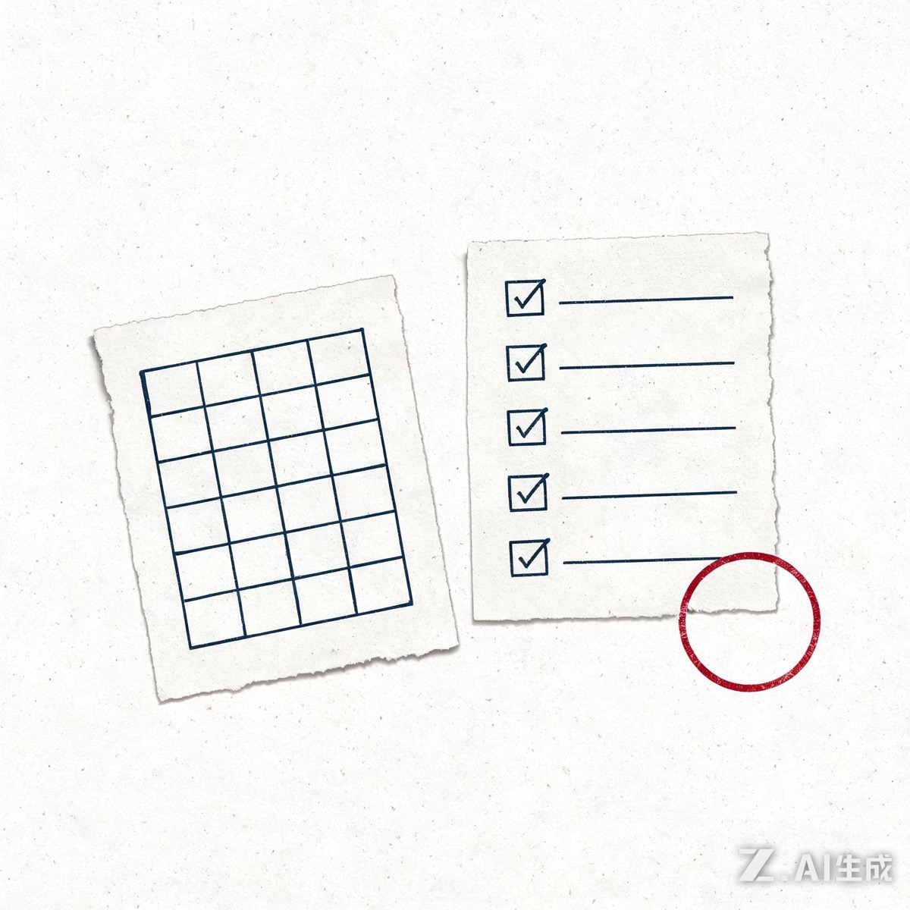

第二张课表之困
当年轻一代开始
重写自己的专业边界
从高校培养方案到招聘启事，
一张课表之外，他们还要补上什么？
引子
本章回答：谁在跨出新传，谁又走进来？这些选择依据什么材料被看见？
2025年秋招前夕，凌晨两点。
人物叙事与工时：15人模拟访谈编码；高校与岗位信息：公开文件及招聘原文。
某211高校新闻学本科生赵明哲盯着电脑屏幕上报错的Python脚本，把桌角那套刚买不久的新闻传播学考研真题挂上了闲鱼，半价出掉。
在这之前，他把字节、快手、京东的校招启事翻了个底朝天，发现互联网大厂的内容运营岗全在写“熟悉SQL”“熟练使用AIGC工具”，只有极少数传统媒体还在提“新闻敏感”：
“真正决定我拿到offer的，不是学校里背的‘把关人理论’，是我大三实习时花钱报网课、自己用大模型API搭过一个违规文本分类小工具。大家嘴上在宿舍里都不怎么聊，其实课表底下都在偷偷换赛道。”
这不是一个人的退场。
2025年5月19日，北京大学外国语学院公布“外国语言与国际传播”（FLIC）项目录取名单，8名来自俄语、英语、乌尔都语等6个专业的学生，将在主修之外补上新闻理论与视频采编（FLIC录取公示）。
一周后，北京大学新闻与传播学院公示“国际传播与国际金融”项目拟录取名单，5名新传学生入选，第二学年他们将暂别燕园，南下深圳、远赴英国用全英文学金融（金融拟录取公示）。
北京4号线的晚高峰地铁里，人大新闻学院的陈思琪在都市报实习两个月、倒贴房租还被老师傅骂哭后，转头去统计学院蹭计量经济学、期中微积分考了38分挂科重修。
“习惯了。”
看到朋友圈里又有学弟学妹因为“到底报不报辅修”而彻夜失眠，退掉金融课表和Python教材、如今在头部MCN拿到高薪SP offer的梁亦辰心里只有这一个想法。
在外界惊讶于“连清北人师传的学生都在拼命打补丁”时，梁亦辰却觉得习以为常。因为在他的经历里，大二硬塞12小时跨界课表、每天睡不到6小时、主修绩点掉0.3的崩溃，早在退课的第一个月就已经写好了结局。
两扇门打开了，
名额却没有填满
北大两项跨界项目 · 计划人数与公示人数
怎么读 每格代表一个计划名额，填色格为公示录取或拟录取人数；轻触每行查看口径。
来源：FLIC 2024 公示、FLIC 2025 公示、国际金融 2025 公示。每格代表一个计划名额。
图中发现 三次公示人数均低于计划；这不是报名人数，也不能据此计算录取率。
近三年来，北京五所高校陆续在辅修、双学位与联合培养等层级打开了跨学科的新入口。然而公开数据显示，北大FLIC连续两年计划招收20人，实际仅录取6人与8人（FLIC2025简章）；国际金融项目计划约15人，最终拟录取5人（金融2025简章）。
他们在高校培养方案与用人单位招聘启事之间浮浮沉沉。有人通过“第二张课表”拿到了央媒入场券，有人选择退课回到垂直内容赛道，也有人彻底换掉“最高学历”离开新传。三年过去，一张传统课表最初许诺的未来还剩多少？千千万万个即将步入职场的新传人，又将如何审视自身命运？
誓言下的出走
本章回答：招聘启事要求什么，原有的新传本领还够用吗？
走进新闻传播学院的第一天，几乎所有新生都听过那句熟悉的期许：“铁肩担道义，妙手著文章。”在高校的培养方案里，他们被许诺将被锻造成“具有深厚人文素养、敏锐新闻判断与全媒体生产能力的复合型人才”。
那么，一支原本被许诺用来“记录时代”的笔，为何急着逃离自己的专业？
周子昂是中国传媒大学传播学2022级本科生。大二下学期，他在一家知名财经自媒体实习了一个多月，突然感到了某种难以言说的“可替代性恐慌”：带他的主编本科是学中文的，旁边写深度调查最猛的师兄是社会学硕士，连隔壁组写科技行业分析的实习生都是材料学转过来的。
“我在学校上了那么多传播史、受众分析、媒介批评，到底什么东西是别人花三个月实习学不会的？想了一晚上，我发现好像没有。可反过来，人家的专业门槛，我三个月根本跨不过去。”
我们对53条用人单位招聘启事原文的逐字编码，呈现出三类雇主对能力要求的差异——其中涵盖新华社、中国日报社、人民网、经济日报社等中央媒体15条，财新传媒、澎湃新闻、21世纪经济报道等市场化媒体18条，以及字节跳动、腾讯、快手、百度等9家互联网大厂2027届校招20条。
统计结果显示，不同雇主递过来的，几乎是三张毫不相干的清单。“采访”“新闻敏感”这类传统新闻本领，出了媒体就不再被点名。在中央媒体JD中，“新闻采编与判断”提及率为73%，市场化媒体为61%，在这20条互联网招聘启事中为0%——哪怕单看互联网内容运营岗，要的也是“平台与账号运营”（90%）和“选题策划”（80%），没有一条写“采访”或“新闻敏感”。
与此同时，划开三类雇主的分水岭变成了数据、AI与垂直行业知识：明确要求“数据分析与指标”的岗位，央媒仅占7%，市场化媒体占28%，互联网大厂高达85%；提到“AI工具与大模型”的，大厂占65%，两类媒体则都不到一成；而在市场化媒体中，61%明确要求财经或商业知识，21世纪经济报道的3个2027届校招记者岗，专业要求更是直接写着“经济、管理、理工科等相关专业优先”，甚至没有提及新闻专业（21世纪经济报道记者岗JD）。
三类雇主，三张清单
53条招聘启事中，哪些技能被直接点名？
怎么读 直接比较同一行的提及率；悬停、聚焦或轻触色条，读取条数与对应岗位原句。
新闻采编与判断：央媒73%、市场化媒体61%、互联网0%。数据分析与指标：7%、28%、85%。AI工具与大模型：7%、6%、65%。
来源：53条招聘启事编码。中央媒体15条、市场化媒体18条、互联网20条（内容与数据分析各10条）。比例＝提及该技能的岗位数 / 该组岗位数。
查看完整技能数据
| 技能 | 中央媒体 /15 | 市场化媒体 /18 | 互联网 /20 | 内容岗 /10 | 数分岗 /10 |
|---|---|---|---|---|---|
| 写作表达 | 13 | 15 | 8 | 5 | 3 |
| 新闻采编与判断 | 11 | 11 | 0 | 0 | 0 |
| 选题策划 | 13 | 13 | 8 | 8 | 0 |
| 视频与视听制作 | 12 | 8 | 6 | 5 | 1 |
| 平台与账号运营 | 9 | 9 | 13 | 9 | 4 |
| 外语 | 11 | 5 | 3 | 0 | 3 |
| 财经与商业知识 | 2 | 11 | 4 | 0 | 4 |
| 用户与传播效果 | 3 | 4 | 16 | 7 | 9 |
| 视觉与设计 | 5 | 5 | 5 | 1 | 4 |
| 数据分析与指标 | 1 | 5 | 17 | 7 | 10 |
| 编程与数据工具 | 0 | 2 | 7 | 1 | 6 |
| AI工具与大模型 | 1 | 1 | 13 | 7 | 6 |
| 沟通协作（通用） | 8 | 9 | 16 | 9 | 7 |
图中发现 在本样本中，互联网对数据与AI的点名明显多于两类媒体。
查阅 53 条招聘启事与原文
对新传与外语学子而言，如果不想被第一张课表困在原地，“跨界”几乎成了必选项——要么在本科期间咬牙挤出第二张课表，要么干脆推倒重来。
一名本科生要跨出或跨进新闻传播，至少要面临四条截然不同的时间与制度路径：本校轻量化荣誉课程包（约15学分）、本校辅修专业证书或辅修学士学位（25—40学分，需额外修读1—2年周末及晚间）、校内跨院系联合培养项目（约30—38学分，含整年异地或高强度实践），以及放弃本科辅修、耗时2.5—3年直接跨考硕士更换“最高学历”。
离开原专业，
有多远的路要走？
怎么读 横向看修读要求与凭证；轻触路径读取其区别，学分仅在各项目口径内比较。
荣誉课程包
15 学分从一组跨学科课程开始
拓宽主修边界
辅修证书 / 学位
25–40 学分进入另一张培养方案
占用晚间与周末
联合培养项目
跨院 / 异地语言、传播与金融交叉
学分及凭证按项目规定
跨专业考研
更换最高学历从本科走向另一专业
重新进入完整培养周期
课程包与辅修学分分别取自人大、中传公开文件；联合项目见北大招生简章。
图中发现 “跨界”有不同制度入口，修课与更换最高学历不是同一种结果。
在周子昂看来，本科辅修的沉没成本与回报不成正比：“周末耗进去十几个小时，最后只是主修证上的一行附注。”大三起，他直接放弃了本专业秋招，把每周20个小时全部砸进法律硕士考研与法考真题里，“既然人家看重壁垒，我就花两年半，把最高学历直接换成法学硕士。”
对于正在经历“双轨筛选”的宋知微来说，这种制度算计同样异常清晰。她翻遍了央媒校招公告，发现人民日报社2025年招聘公告白纸黑字写着“专业条件按最高学历对应专业把握”。“如果本科累死累活修个新闻辅修，最后毕业依然过不了核心采编岗的学历门槛，那不如把汉语言的底子打牢，直接考研换一张名校新传硕士的通行证。”
我是跨界人，
还是局外人？
本章回答：第二张课表能补上哪些能力，又跨不过哪些资格门槛？
在漫长的自我补课中，“第二张课表”的修读者往往陷入最尴尬的身份定位。
谈宣传与育人成果时，高校说你是“复合型跨学科人才”；谈网申机筛与资格审查时，用人单位说你“主修专业代码不符”——就是付出额外的学费与周末，却在体制内岗位面前依然只算“半个局外人”。
唐奕是中国传媒大学动画与数字艺术学院2022级本科生。大三试投广电与央媒视频工作室时，明明岗位职责写着要会动画制作与动效包装，他却在网申第一关就被系统直接秒拒。“因为我拿的是艺术学学位，专业代码13开头，系统初筛只勾选了0503新闻传播学类，作品集再牛也进不了面试。”为了买一张“0503”的过筛通行证，他咬牙交了5200元，去修40学分的新闻学辅修学士学位。
然而，当我们把“走进新传”的两份代表性课表——北大FLIC（2024年共25门）与中传新闻学辅修（2025年共18门），合计43门课程——与53条JD进行逐一比对时，却发现了另一层残酷的错位：课表补得最足的写作、采编与视频制作，恰好只对接了中央媒体（央媒80%提及视频、73%提及外语）；而市场化媒体看重的行业知识，以及互联网大厂85%看重的数据分析、65%看重的AI工具，在这43门课程的名称中很少被直接点出。
具体来看，中传辅修16学分必修中，新闻史论与采写编各占6学分，以“数据”或“数字”命名的仅《数据新闻报道概论》《数字新闻学原理》2门必修（共4学分、32学时×2），统计建模、Python编程、数据库或机器学习均未见独立设课（中传新闻学辅修简章）；北大FLIC的25门课中，同样没有一门以数据、编程或AI命名（FLIC2024简章）。
16学分必修，
“数据”占据了哪一角？
中国传媒大学新闻学辅修 · 2025年必修课程
怎么读 面积按学分分配；轻触6、6、4三个区块，查看课程名称与学时。
数据与数字新闻 · 4学分
数据新闻报道概论 · 2学分 / 32学时
数字新闻学原理 · 2学分 / 32学时
来源：中传2025年辅修招生简章及教学计划；按课程名称归类，每一学分对应图中等量面积。
翻阅两校 43 门课程
下载课程底表 CSV图中发现 数据与数字新闻共4/16学分；课程名称不能证明实际教授了哪些技术。
中传数媒技术专业的陆宇轩在修完《数据新闻报道概论》后直言：“技术上太浅了，就是去公开网站找数据做现成图表，跟我们本专业写的Python爬虫完全不在一个量级。”清华计算机系出身、修完新闻辅修后入职头部财经媒体数据新闻部的苏念也给出了同样的判断：“面试考的是用Python清洗几十万条工商脏数据，新闻辅修只能证明你懂新闻价值和采访边界，核心壁垒还是代码。”
而在“跨出新传”的另一端，制度门槛与经济成本则筑起了另一道高墙。
北大“国际传播与国际金融”项目在简章中写明“不另收学费”，但第二学年9月至次年4月在深圳、4月至6月赴英国，住宿、生活、交通与保险费用全部由学生自理（金融2025简章）。入选该项目的林致远算了一笔账：深圳九个月房租加吃饭每月五六千，加上英国三个月，这一年下来家里少说得额外掏出十几万元。“我打电话跟我爸商量，我爸沉默了三秒直接给我转了十万块。挂了电话我心里挺不是滋味的——院里好几个成绩比我好的同学，连报名表都没敢领。”
周复一周
本章回答：主修之外的学习，怎样挤进一周的时间？
推开门只是开始。在我们的15人访谈样本中，受访者平均每周要在原专业之外额外投入13.4小时，其中“转出新传”群体均值高达16.6小时，最高达到每周22小时。
课表之外，
每周还要交出多少小时？
三种流动路径的平均额外投入
怎么读 柱长使用同一小时尺度；轻触各路径查看人数与均值。
平均 13.4 小时 / 周
来源：15人模拟访谈编码，各组5人；柱长使用同一小时尺度。
图中发现 模拟编码中，转出新传组的额外投入最高；总体平均为13.4小时/周。
这是跨界生再普通不过的一周。
点开他们的一周
怎么读 先选人物，再选课程阶段；卡片显示主修与跨界学习如何交替。
沈若宁
北大外院乌尔都语 · FLIC项目
14小时 / 周
阅读三人的完整周记
沈若宁（北大外院乌尔都语｜FLIC项目｜周投入14小时）
周一至周四白天：背诵乌尔都语字母、研读南亚文学史，跨过专业成绩前50%的报名门槛后，继续应对主修的学业要求。（“外语人现在特别焦虑，如果不修FLIC，毕业简历上除了专四专八几乎啥也没有。”）
周五傍晚至周六全天：完成《中国文化走出去实践课》硬性要求的5个采编视频作品——扛着三脚架满校园找留学生采访，回来自己写英文脚本、配音、剪辑。（“好几个周五晚上为了赶周六早上的作业截止时间，在宿舍导出4K成片到凌晨两点半，笔记本风扇转得像拖拉机，吵得室友直翻身，心里特别愧疚。”）
叶书桓（北师大传播学＋人工智能双学士｜官方集成课表｜周投入20小时）
周二上午08:00：在文科楼听传播学老师讲拉扎斯菲尔德和媒介环境学，沉浸在阅读量与论文思辨里。（“刚进入文科的哲学语境，脑子还没转过来。”）
周二下午13:30至晚间：冲去机房对着高等数学、线性代数和Python数据结构发呆，屏幕上一整片红色报错。（“学校等于用502胶水把两张课表硬焊死在一起。我们班有好几个高考偏文科的同学，大一上学期就被微积分和Python虐哭了好几次。”）
陈思琪（人大新闻学｜野路子跨出大厂数分｜周投入18小时）
周一至周五白天：应付新闻主修课，推掉已经联系好的央媒日常实习，每天晚上在明德楼图书馆坐到闭馆。（“带教老师问我怎么不来了，我只能撒谎说家里有事，其实心里虚得要命。”）
周末全天至深夜：去经院和统计学院蹭计量经济学，在图书馆刷LeetCode SQL窗口函数与A/B测试归因题。（“高数期中只考了38分，最后挂科重修，那阵子焦虑到枕头上全是头发。”）
来源：15人模拟访谈编码中的三位人物叙事；插画仅作视觉呈现。
图中发现 第二张课表占用的是具体晚间与周末；三人的叙事不代表总体分布。
对于没有退路的跨界者而言，这种高强度的挤压在168小时的循环里留下了一模一样的疲惫：
周三晚上辅修下课十点。
周五晚上导视频到凌晨两点半。
周六早上八点坐在三教写新闻评论。
周日深夜盯着报错的Python窗口掉眼泪。
周一早八点继续坐在主修教室里。
“身体的疲惫是可以忍受的，但还有心理上的内耗与踏空感。”看着同宿舍的室友周末去接商业三维外包、去大厂实习一天拿两三百块钱补贴，自己却还要倒贴5200元学费坐在教室里，唐奕坦言自己“连生病都不敢请假，因为中传规定主修一结束辅修就终止，差一门没修完前面全作废”。
面对这种消耗，有人选择了在门前撤退，也有人在岔路口留下了各自的清醒：
“本科这第二张课表，更像是我给自己买的一张跨专业读研的预备票。想把‘最高学历’的底彻底坐实，大概率还得再去申一个金融硕士。”
林致远（北大新传2023级，国际金融项目在读）
“英语现在在招聘会上像空气一样透明。15学分荣誉课程包只能帮你搭个入门框架，真要变成竞争力，还是得靠课外自己熬夜做项目攒出来。”
顾清晏（人大英语系2022级，修读荣誉辅修课程包）
“一旦报了FLIC，每周十四个小时锁在25门课里，我在财新的日常实习就得黄。高校课表永远慢半拍，与其拿一张荣誉证书，不如实打实攒五篇署名深度稿。”
温景行（北大俄语系2023级，符合前50%门槛但主动放弃报名）
“大家总在鼓吹必须有第二张课表，其实不是每个人都扛得住那个时间成本。把第一张课表里最核心的内容网感做到极致，一样能杀出一条血路。”
梁亦辰（中传新闻学2022级，退掉跨界课表后入职MCN）
第一张课表，
也会迎来清晨吗？
本章回答：制度正在怎样变化，跨界还要支付哪些成本？
好的培养制度从来不会自行到来。高校与行业之间正在经历一场漫长的磨合，试图在重压之下寻找破解“单向度培养”的可能。
第二张课表，
正在写进制度
2023—2025年 · 北京五校跨学科入口
怎么读 筛选年份后展开项目，核对准入条件、修读方式与结业凭证。
2023清华大学新闻学辅修学位
- 准入与修读
- 按校内辅修培养机制修读
- 结业凭证
- 辅修学位
2024北京师范大学传播学＋人工智能（双学位）
- 准入与修读
- 获批双学士学位项目，联合培养
- 结业凭证
- 双学士学位
2024中国传媒大学传播学（智能与计算传播）
- 准入与修读
- 主修专业下调整设立的新方向
- 结业凭证
- 主修毕业/学位
2024—2025北京大学外国语言与国际传播 FLIC
- 准入与修读
- 限外院，排名前50%，未修双学位；计划20人
- 结业凭证
- 联合项目荣誉证书
2025北京大学国际传播与国际金融
- 准入与修读
- 限新传及元培新传，不可退出/修双学位；约15人
- 结业凭证
- 跨学科联合培养证书
2025中国传媒大学新闻学辅修
- 准入与修读
- 限非新传类本校生，必修全及格；计划150人
- 结业凭证
- 辅修学位（注明）或证书
2025中国人民大学全校专业教育＋荣誉辅修包
- 准入与修读
- 面向全校开放15学分荣誉课程包
- 结业凭证
- 荣誉辅修课程包凭证
点击项目查看准入条件、凭证与官方文件。
图中发现 2023—2025年公开文件显示，跨学科入口从辅修延伸至双学位与课程包。
变化正在发生。从早年间单纯依赖学生周末“打补丁”的传统辅修，到2024年北师大获批“传播学＋人工智能”双学士学位、中传在传播学下直接调整设立“智能与计算传播方向”，再到2025年人大面向全校开放15学分轻量荣誉课程包，高校已经在尝试把“第二张课表”从边缘的自我救济，慢慢纳入官方的主干设计。
然而，制度的善意落地为现实的账单时，依然面临着难以回避的摩擦。
“不另收学费”之外，
还有多少成本？
切换项目，展开时间、学分与费用清单
怎么读 切换项目读取学分、收费和时间条件；展开下表并排比较。
并排比较三条路径
| 路径与项目 | 学分要求 | 公开课程收费 | 时间与地点 | 互斥与机会成本 |
|---|---|---|---|---|
| 走进新传｜中传辅修 | 学位≥40；证书≥25 | 130元/学分（最低5,200/3,250元） | 周末及周三/周五晚（校内） | 含5学分毕设；主修结束即止 |
| 走进新传｜北大FLIC | 正文30（分项合计28） | 简章未列额外学费 | 校内跨院修读（5个视频实践） | 不可修双学位；报名成绩须居前50% |
| 跨出新传｜北大金融 | 4模块×9周（抵免≤38） | 不另收学费；设专项奖学金 | 9—4月深圳，4—6月英国 | 食宿交通自理；不可退出/双学位 |
来源：中传2025年辅修招生简章、北大FLIC与国际金融2025年简章；各项目原文链接见上方清单。
图中发现 不另收学费不等于没有成本，异地食宿交通、时间与修读限制仍需承担。
首先，当市场化媒体与互联网大厂对行业知识、数据分析和AI工具提出要求；在所采集的互联网招聘启事中，后二者提及率分别达到85%和65%时，高校的课程更新周期依然明显滞后；其次，当越来越多学生把“第二张课表”当作标配，能够稳稳接住周末时间、额外学费与异地生活费的，往往又是那些绩点靠前、且拥有一定家庭经济托举的年轻人；更重要的是，只要用人单位的资格审查仍然死守“最高学历对应专业代码”，本科阶段的跨学科凭证就很难真正消解学历焦虑。
查阅高校文件与项目资料
三个核心发现
- 岗位要的能力，因雇主而异。53条样本中，互联网数据分析与指标提及率85%，AI工具与大模型65%；两类媒体仍更常点名新闻采编。
- 第二张课表补得上课程，未必补齐岗位要求。两校43门目录中，中传16学分必修有4学分以数据或数字命名；课程名、凭证与最高学历专业资格需要分别判断。
- 跨界入口增加，成本仍落在个人的一周里。15人模拟编码的平均额外投入为13.4小时/周；公开简章同时列出收费、异地生活及修读限制。
面对“专业边界”和“招聘门槛”这两个庞然大物，个体的精力与大学四年都过于有限和短暂。对于越来越多正在赶路的新传人与跨界者而言，跑过“第二张课表”的终点线、拿到那张证书或附注之时，迎接他们的并不是安稳上岸，而是又一声枪响——真正决定去向的长跑，现在才刚刚开始。
回到第一页